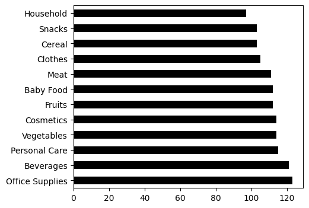

# biblioteca
import pandas as pdMétodos básicos
Métodos básicos
vendas = pd.read_csv('EuropeSalesRecords.csv')
vendas| Region | Country | Item Type | Sales Channel | Order Priority | Order Date | Order ID | Ship Date | Units Sold | Unit Price | Unit Cost | Total Revenue | Total Cost | Total Profit | |
|---|---|---|---|---|---|---|---|---|---|---|---|---|---|---|
| 0 | Europe | Czech Republic | Beverages | Offline | C | 9/12/2011 | 478051030 | 9/29/2011 | 4778 | 47.45 | 31.79 | 226716.10 | 151892.62 | 74823.48 |
| 1 | Europe | Bosnia and Herzegovina | Clothes | Online | M | 10/14/2013 | 919133651 | 11/4/2013 | 927 | 109.28 | 35.84 | 101302.56 | 33223.68 | 68078.88 |
| 2 | Europe | Austria | Cereal | Offline | C | 8/13/2014 | 987410676 | 9/6/2014 | 5616 | 205.70 | 117.11 | 1155211.20 | 657689.76 | 497521.44 |
| 3 | Europe | Bulgaria | Office Supplies | Online | L | 10/31/2010 | 672330081 | 11/29/2010 | 6266 | 651.21 | 524.96 | 4080481.86 | 3289399.36 | 791082.50 |
| 4 | Europe | Estonia | Fruits | Online | L | 9/28/2016 | 579463422 | 11/1/2016 | 4958 | 9.33 | 6.92 | 46258.14 | 34309.36 | 11948.78 |
| ... | ... | ... | ... | ... | ... | ... | ... | ... | ... | ... | ... | ... | ... | ... |
| 1325 | Europe | Norway | Personal Care | Offline | M | 1/14/2014 | 634033286 | 1/15/2014 | 3394 | 81.73 | 56.67 | 277391.62 | 192337.98 | 85053.64 |
| 1326 | Europe | Ukraine | Cereal | Offline | L | 4/14/2014 | 559183347 | 5/21/2014 | 3633 | 205.70 | 117.11 | 747308.10 | 425460.63 | 321847.47 |
| 1327 | Europe | Armenia | Meat | Offline | M | 11/9/2015 | 781416594 | 12/23/2015 | 7390 | 421.89 | 364.69 | 3117767.10 | 2695059.10 | 422708.00 |
| 1328 | Europe | Denmark | Clothes | Offline | H | 5/9/2012 | 713357150 | 6/3/2012 | 7088 | 109.28 | 35.84 | 774576.64 | 254033.92 | 520542.72 |
| 1329 | Europe | Finland | Clothes | Online | L | 4/22/2014 | 906794202 | 5/11/2014 | 9410 | 109.28 | 35.84 | 1028324.80 | 337254.40 | 691070.40 |
1330 rows × 14 columns
1. Mostrar as N primeiras ou N últimas linhas
vendas.head()| Region | Country | Item Type | Sales Channel | Order Priority | Order Date | Order ID | Ship Date | Units Sold | Unit Price | Unit Cost | Total Revenue | Total Cost | Total Profit | |
|---|---|---|---|---|---|---|---|---|---|---|---|---|---|---|
| 0 | Europe | Czech Republic | Beverages | Offline | C | 9/12/2011 | 478051030 | 9/29/2011 | 4778 | 47.45 | 31.79 | 226716.10 | 151892.62 | 74823.48 |
| 1 | Europe | Bosnia and Herzegovina | Clothes | Online | M | 10/14/2013 | 919133651 | 11/4/2013 | 927 | 109.28 | 35.84 | 101302.56 | 33223.68 | 68078.88 |
| 2 | Europe | Austria | Cereal | Offline | C | 8/13/2014 | 987410676 | 9/6/2014 | 5616 | 205.70 | 117.11 | 1155211.20 | 657689.76 | 497521.44 |
| 3 | Europe | Bulgaria | Office Supplies | Online | L | 10/31/2010 | 672330081 | 11/29/2010 | 6266 | 651.21 | 524.96 | 4080481.86 | 3289399.36 | 791082.50 |
| 4 | Europe | Estonia | Fruits | Online | L | 9/28/2016 | 579463422 | 11/1/2016 | 4958 | 9.33 | 6.92 | 46258.14 | 34309.36 | 11948.78 |
vendas.head(10)| Region | Country | Item Type | Sales Channel | Order Priority | Order Date | Order ID | Ship Date | Units Sold | Unit Price | Unit Cost | Total Revenue | Total Cost | Total Profit | |
|---|---|---|---|---|---|---|---|---|---|---|---|---|---|---|
| 0 | Europe | Czech Republic | Beverages | Offline | C | 9/12/2011 | 478051030 | 9/29/2011 | 4778 | 47.45 | 31.79 | 226716.10 | 151892.62 | 74823.48 |
| 1 | Europe | Bosnia and Herzegovina | Clothes | Online | M | 10/14/2013 | 919133651 | 11/4/2013 | 927 | 109.28 | 35.84 | 101302.56 | 33223.68 | 68078.88 |
| 2 | Europe | Austria | Cereal | Offline | C | 8/13/2014 | 987410676 | 9/6/2014 | 5616 | 205.70 | 117.11 | 1155211.20 | 657689.76 | 497521.44 |
| 3 | Europe | Bulgaria | Office Supplies | Online | L | 10/31/2010 | 672330081 | 11/29/2010 | 6266 | 651.21 | 524.96 | 4080481.86 | 3289399.36 | 791082.50 |
| 4 | Europe | Estonia | Fruits | Online | L | 9/28/2016 | 579463422 | 11/1/2016 | 4958 | 9.33 | 6.92 | 46258.14 | 34309.36 | 11948.78 |
| 5 | Europe | Montenegro | Fruits | Offline | L | 5/29/2016 | 313705861 | 7/10/2016 | 1390 | 9.33 | 6.92 | 12968.70 | 9618.80 | 3349.90 |
| 6 | Europe | Czech Republic | Cereal | Online | M | 7/8/2011 | 552037513 | 8/5/2011 | 9022 | 205.70 | 117.11 | 1855825.40 | 1056566.42 | 799258.98 |
| 7 | Europe | Luxembourg | Vegetables | Offline | L | 2/13/2010 | 744683635 | 4/1/2010 | 7291 | 154.06 | 90.93 | 1123251.46 | 662970.63 | 460280.83 |
| 8 | Europe | Switzerland | Meat | Online | L | 3/21/2014 | 169378983 | 4/10/2014 | 1860 | 421.89 | 364.69 | 784715.40 | 678323.40 | 106392.00 |
| 9 | Europe | Finland | Beverages | Online | H | 3/16/2012 | 566428315 | 3/23/2012 | 7581 | 47.45 | 31.79 | 359718.45 | 240999.99 | 118718.46 |
vendas.tail()| Region | Country | Item Type | Sales Channel | Order Priority | Order Date | Order ID | Ship Date | Units Sold | Unit Price | Unit Cost | Total Revenue | Total Cost | Total Profit | |
|---|---|---|---|---|---|---|---|---|---|---|---|---|---|---|
| 1325 | Europe | Norway | Personal Care | Offline | M | 1/14/2014 | 634033286 | 1/15/2014 | 3394 | 81.73 | 56.67 | 277391.62 | 192337.98 | 85053.64 |
| 1326 | Europe | Ukraine | Cereal | Offline | L | 4/14/2014 | 559183347 | 5/21/2014 | 3633 | 205.70 | 117.11 | 747308.10 | 425460.63 | 321847.47 |
| 1327 | Europe | Armenia | Meat | Offline | M | 11/9/2015 | 781416594 | 12/23/2015 | 7390 | 421.89 | 364.69 | 3117767.10 | 2695059.10 | 422708.00 |
| 1328 | Europe | Denmark | Clothes | Offline | H | 5/9/2012 | 713357150 | 6/3/2012 | 7088 | 109.28 | 35.84 | 774576.64 | 254033.92 | 520542.72 |
| 1329 | Europe | Finland | Clothes | Online | L | 4/22/2014 | 906794202 | 5/11/2014 | 9410 | 109.28 | 35.84 | 1028324.80 | 337254.40 | 691070.40 |
vendas.tail(2)| Region | Country | Item Type | Sales Channel | Order Priority | Order Date | Order ID | Ship Date | Units Sold | Unit Price | Unit Cost | Total Revenue | Total Cost | Total Profit | |
|---|---|---|---|---|---|---|---|---|---|---|---|---|---|---|
| 1328 | Europe | Denmark | Clothes | Offline | H | 5/9/2012 | 713357150 | 6/3/2012 | 7088 | 109.28 | 35.84 | 774576.64 | 254033.92 | 520542.72 |
| 1329 | Europe | Finland | Clothes | Online | L | 4/22/2014 | 906794202 | 5/11/2014 | 9410 | 109.28 | 35.84 | 1028324.80 | 337254.40 | 691070.40 |
2. Tamanho do dataframe
vendas.shape(1330, 14)linhas = vendas.shape[0]
colunas = vendas.shape[1]
print(f'Linhas: {linhas}, Colunas: {colunas}')Linhas: 1330, Colunas: 143. Tipo de dados e informações gerais
vendas.info()<class 'pandas.core.frame.DataFrame'>
RangeIndex: 1330 entries, 0 to 1329
Data columns (total 14 columns):
# Column Non-Null Count Dtype
--- ------ -------------- -----
0 Region 1330 non-null object
1 Country 1330 non-null object
2 Item Type 1330 non-null object
3 Sales Channel 1330 non-null object
4 Order Priority 1324 non-null object
5 Order Date 1330 non-null object
6 Order ID 1330 non-null int64
7 Ship Date 1330 non-null object
8 Units Sold 1330 non-null int64
9 Unit Price 1330 non-null float64
10 Unit Cost 1330 non-null float64
11 Total Revenue 1330 non-null float64
12 Total Cost 1330 non-null float64
13 Total Profit 1330 non-null float64
dtypes: float64(5), int64(2), object(7)
memory usage: 145.6+ KBColunas
vendas.columnsIndex(['Region', 'Country', 'Item Type', 'Sales Channel', 'Order Priority',
'Order Date', 'Order ID', 'Ship Date', 'Units Sold', 'Unit Price',
'Unit Cost', 'Total Revenue', 'Total Cost', 'Total Profit'],
dtype='object')4. Dados nulos
Total de nulos
vendas.isna().sum()Region 0
Country 0
Item Type 0
Sales Channel 0
Order Priority 6
Order Date 0
Order ID 0
Ship Date 0
Units Sold 0
Unit Price 0
Unit Cost 0
Total Revenue 0
Total Cost 0
Total Profit 0
dtype: int64Percentual
vendas.isna().sum() / len(vendas) * 100Region 0.000000
Country 0.000000
Item Type 0.000000
Sales Channel 0.000000
Order Priority 0.451128
Order Date 0.000000
Order ID 0.000000
Ship Date 0.000000
Units Sold 0.000000
Unit Price 0.000000
Unit Cost 0.000000
Total Revenue 0.000000
Total Cost 0.000000
Total Profit 0.000000
dtype: float645. Valores disintos
Quais são os valores únicos da coluna
Item Type?
vendas['Item Type'].unique()array(['Beverages', 'Clothes', 'Cereal', 'Office Supplies', 'Fruits',
'Vegetables', 'Meat', 'Snacks', 'Baby Food', 'Household',
'Cosmetics', 'Personal Care'], dtype=object)Quantos são?
vendas['Item Type'].nunique()126. Contagem de valores
# contagem para `Item Type`:
vendas['Item Type'].value_counts()Office Supplies 123
Beverages 121
Personal Care 115
Vegetables 114
Cosmetics 114
Fruits 112
Baby Food 112
Meat 111
Clothes 105
Cereal 103
Snacks 103
Household 97
Name: Item Type, dtype: int64Incluir nulos: opção
dropna=False.
# coluna `Order Priority`:
vendas['Order Priority'].value_counts(dropna=False)M 352
L 334
H 334
C 304
NaN 6
Name: Order Priority, dtype: int64####*Dica** > Podemos inclusive plotar essa contagem, mas isso veremos com mais calma adiante. Vejamos um exemplo com Item Type
vendas['Item Type'].value_counts(dropna=False).plot.barh(figsize=(5,4), color='black')
7. Duplicatas
# coluna `Sales Channel`:
vendas['Sales Channel'].drop_duplicates()0 Offline
1 Online
Name: Sales Channel, dtype: object# subset: `Country`:
vendas.drop_duplicates(subset='Country')| Region | Country | Item Type | Sales Channel | Order Priority | Order Date | Order ID | Ship Date | Units Sold | Unit Price | Unit Cost | Total Revenue | Total Cost | Total Profit | |
|---|---|---|---|---|---|---|---|---|---|---|---|---|---|---|
| 0 | Europe | Czech Republic | Beverages | Offline | C | 9/12/2011 | 478051030 | 9/29/2011 | 4778 | 47.45 | 31.79 | 226716.10 | 151892.62 | 74823.48 |
| 1 | Europe | Bosnia and Herzegovina | Clothes | Online | M | 10/14/2013 | 919133651 | 11/4/2013 | 927 | 109.28 | 35.84 | 101302.56 | 33223.68 | 68078.88 |
| 2 | Europe | Austria | Cereal | Offline | C | 8/13/2014 | 987410676 | 9/6/2014 | 5616 | 205.70 | 117.11 | 1155211.20 | 657689.76 | 497521.44 |
| 3 | Europe | Bulgaria | Office Supplies | Online | L | 10/31/2010 | 672330081 | 11/29/2010 | 6266 | 651.21 | 524.96 | 4080481.86 | 3289399.36 | 791082.50 |
| 4 | Europe | Estonia | Fruits | Online | L | 9/28/2016 | 579463422 | 11/1/2016 | 4958 | 9.33 | 6.92 | 46258.14 | 34309.36 | 11948.78 |
| 5 | Europe | Montenegro | Fruits | Offline | L | 5/29/2016 | 313705861 | 7/10/2016 | 1390 | 9.33 | 6.92 | 12968.70 | 9618.80 | 3349.90 |
| 7 | Europe | Luxembourg | Vegetables | Offline | L | 2/13/2010 | 744683635 | 4/1/2010 | 7291 | 154.06 | 90.93 | 1123251.46 | 662970.63 | 460280.83 |
| 8 | Europe | Switzerland | Meat | Online | L | 3/21/2014 | 169378983 | 4/10/2014 | 1860 | 421.89 | 364.69 | 784715.40 | 678323.40 | 106392.00 |
| 9 | Europe | Finland | Beverages | Online | H | 3/16/2012 | 566428315 | 3/23/2012 | 7581 | 47.45 | 31.79 | 359718.45 | 240999.99 | 118718.46 |
| 10 | Europe | Belgium | Snacks | Online | M | 1/12/2015 | 519380223 | 1/17/2015 | 5005 | 152.58 | 97.44 | 763662.90 | 487687.20 | 275975.70 |
| 11 | Europe | San Marino | Office Supplies | Online | H | 4/13/2014 | 904589211 | 5/4/2014 | 6905 | 651.21 | 524.96 | 4496605.05 | 3624848.80 | 871756.25 |
| 13 | Europe | Netherlands | Meat | Offline | M | 3/8/2017 | 747774398 | 4/3/2017 | 1916 | 421.89 | 364.69 | 808341.24 | 698746.04 | 109595.20 |
| 14 | Europe | Russia | Household | Online | M | 7/10/2017 | 194176757 | 8/20/2017 | 72 | 668.27 | 502.54 | 48115.44 | 36182.88 | 11932.56 |
| 15 | Europe | Ukraine | Cosmetics | Online | H | 1/22/2011 | 773645913 | 1/28/2011 | 7873 | 437.20 | 263.33 | 3442075.60 | 2073197.09 | 1368878.51 |
| 17 | Europe | Latvia | Meat | Offline | M | 12/15/2011 | 847317397 | 12/18/2011 | 8902 | 421.89 | 364.69 | 3755664.78 | 3246470.38 | 509194.40 |
| 18 | Europe | Serbia | Beverages | Online | L | 9/3/2012 | 599624192 | 9/21/2012 | 978 | 47.45 | 31.79 | 46406.10 | 31090.62 | 15315.48 |
| 19 | Europe | Portugal | Office Supplies | Online | M | 1/21/2014 | 734318292 | 3/4/2014 | 9956 | 651.21 | 524.96 | 6483446.76 | 5226501.76 | 1256945.00 |
| 20 | Europe | Poland | Household | Offline | L | 7/7/2017 | 232196319 | 8/4/2017 | 905 | 668.27 | 502.54 | 604784.35 | 454798.70 | 149985.65 |
| 21 | Europe | Liechtenstein | Cosmetics | Online | L | 7/15/2012 | 229693067 | 7/15/2012 | 138 | 437.20 | 263.33 | 60333.60 | 36339.54 | 23994.06 |
| 22 | Europe | United Kingdom | Beverages | Online | C | 4/8/2017 | 121945512 | 4/12/2017 | 5242 | 47.45 | 31.79 | 248732.90 | 166643.18 | 82089.72 |
| 23 | Europe | Slovenia | Fruits | Online | H | 10/22/2012 | 169799983 | 11/20/2012 | 6443 | 9.33 | 6.92 | 60113.19 | 44585.56 | 15527.63 |
| 24 | Europe | Malta | Vegetables | Online | M | 3/11/2014 | 894589078 | 4/10/2014 | 7643 | 154.06 | 90.93 | 1177480.58 | 694977.99 | 482502.59 |
| 26 | Europe | Cyprus | Fruits | Offline | M | 7/12/2015 | 600515115 | 8/30/2015 | 4622 | 9.33 | 6.92 | 43123.26 | 31984.24 | 11139.02 |
| 28 | Europe | Monaco | Personal Care | Online | L | 6/8/2014 | 263098371 | 7/4/2014 | 5509 | 81.73 | 56.67 | 450250.57 | 312195.03 | 138055.54 |
| 30 | Europe | Norway | Cereal | Online | M | 10/8/2014 | 100640618 | 10/18/2014 | 650 | 205.70 | 117.11 | 133705.00 | 76121.50 | 57583.50 |
| 33 | Europe | Armenia | Fruits | Online | M | 3/23/2011 | 120977771 | 5/2/2011 | 8866 | 9.33 | 6.92 | 82719.78 | 61352.72 | 21367.06 |
| 35 | Europe | Denmark | Beverages | Online | H | 6/5/2016 | 973268353 | 6/26/2016 | 589 | 47.45 | 31.79 | 27948.05 | 18724.31 | 9223.74 |
| 37 | Europe | Kosovo | Fruits | Online | L | 5/2/2010 | 291995418 | 6/6/2010 | 6788 | 9.33 | 6.92 | 63332.04 | 46972.96 | 16359.08 |
| 38 | Europe | Hungary | Baby Food | Online | M | 1/25/2011 | 128686225 | 3/13/2011 | 9968 | 255.28 | 159.42 | 2544631.04 | 1589098.56 | 955532.48 |
| 39 | Europe | Lithuania | Cosmetics | Offline | L | 1/6/2012 | 420875346 | 2/18/2012 | 5223 | 437.20 | 263.33 | 2283495.60 | 1375372.59 | 908123.01 |
| 40 | Europe | Albania | Vegetables | Online | C | 10/5/2012 | 476633536 | 11/3/2012 | 5310 | 154.06 | 90.93 | 818058.60 | 482838.30 | 335220.30 |
| 42 | Europe | Moldova | Personal Care | Online | M | 3/11/2013 | 467045819 | 4/12/2013 | 8092 | 81.73 | 56.67 | 661359.16 | 458573.64 | 202785.52 |
| 51 | Europe | France | Meat | Online | L | 11/28/2015 | 245440852 | 12/17/2015 | 257 | 421.89 | 364.69 | 108425.73 | 93725.33 | 14700.40 |
| 52 | Europe | Spain | Fruits | Online | H | 10/22/2011 | 817006289 | 11/14/2011 | 9172 | 9.33 | 6.92 | 85574.76 | 63470.24 | 22104.52 |
| 53 | Europe | Sweden | Vegetables | Online | H | 9/20/2010 | 298228013 | 10/25/2010 | 1151 | 154.06 | 90.93 | 177323.06 | 104660.43 | 72662.63 |
| 59 | Europe | Macedonia | Cosmetics | Online | C | 12/26/2010 | 350977408 | 1/22/2011 | 869 | 437.20 | 263.33 | 379926.80 | 228833.77 | 151093.03 |
| 60 | Europe | Greece | Personal Care | Offline | NaN | 12/8/2011 | 701298367 | 1/6/2012 | 8626 | 81.73 | 56.67 | 705002.98 | 488835.42 | 216167.56 |
| 61 | Europe | Italy | Personal Care | Online | C | 2/25/2011 | 309342658 | 3/28/2011 | 222 | 81.73 | 56.67 | 18144.06 | 12580.74 | 5563.32 |
| 66 | Europe | Germany | Baby Food | Offline | L | 1/6/2017 | 361311852 | 2/15/2017 | 9061 | 255.28 | 159.42 | 2313092.08 | 1444504.62 | 868587.46 |
| 78 | Europe | Andorra | Cereal | Online | H | 3/19/2010 | 696197879 | 3/26/2010 | 9278 | 205.70 | 117.11 | 1908484.60 | 1086546.58 | 821938.02 |
| 79 | Europe | Iceland | Cosmetics | Online | C | 4/5/2012 | 907349526 | 5/16/2012 | 3743 | 437.20 | 263.33 | 1636439.60 | 985644.19 | 650795.41 |
| 83 | Europe | Croatia | Beverages | Offline | L | 2/22/2013 | 189924275 | 3/21/2013 | 1668 | 47.45 | 31.79 | 79146.60 | 53025.72 | 26120.88 |
| 89 | Europe | Slovakia | Household | Offline | L | 2/20/2010 | 585362994 | 4/11/2010 | 773 | 668.27 | 502.54 | 516572.71 | 388463.42 | 128109.29 |
| 96 | Europe | Vatican City | Beverages | Online | C | 12/27/2015 | 370484149 | 1/19/2016 | 3348 | 47.45 | 31.79 | 158862.60 | 106432.92 | 52429.68 |
| 99 | Europe | Belarus | Vegetables | Online | L | 12/31/2012 | 413078916 | 1/11/2013 | 8086 | 154.06 | 90.93 | 1245729.16 | 735259.98 | 510469.18 |
| 102 | Europe | Ireland | Vegetables | Offline | C | 11/16/2010 | 901670968 | 12/11/2010 | 3331 | 154.06 | 90.93 | 513173.86 | 302887.83 | 210286.03 |
| 140 | Europe | Romania | Snacks | Online | H | 8/18/2014 | 747327220 | 9/15/2014 | 9587 | 152.58 | 97.44 | 1462784.46 | 934157.28 | 528627.18 |
| 152 | Europe | Georgia | Baby Food | Online | L | 1/26/2014 | 359197413 | 3/8/2014 | 3352 | 255.28 | 159.42 | 855698.56 | 534375.84 | 321322.72 |
8. Novas colunas
vendas.head(2)| Region | Country | Item Type | Sales Channel | Order Priority | Order Date | Order ID | Ship Date | Units Sold | Unit Price | Unit Cost | Total Revenue | Total Cost | Total Profit | |
|---|---|---|---|---|---|---|---|---|---|---|---|---|---|---|
| 0 | Europe | Czech Republic | Beverages | Offline | C | 9/12/2011 | 478051030 | 9/29/2011 | 4778 | 47.45 | 31.79 | 226716.10 | 151892.62 | 74823.48 |
| 1 | Europe | Bosnia and Herzegovina | Clothes | Online | M | 10/14/2013 | 919133651 | 11/4/2013 | 927 | 109.28 | 35.84 | 101302.56 | 33223.68 | 68078.88 |
Coluna
Total Profitem BRL (R$)
vendas['Total Profit'] = vendas['Total Profit'].astype('int64')
vendas['Total Profit BRL'] = vendas['Total Profit'] * 4.96
vendas.head(2)| Region | Country | Item Type | Sales Channel | Order Priority | Order Date | Order ID | Ship Date | Units Sold | Unit Price | Unit Cost | Total Revenue | Total Cost | Total Profit | Total Profit BRL | |
|---|---|---|---|---|---|---|---|---|---|---|---|---|---|---|---|
| 0 | Europe | Czech Republic | Beverages | Offline | C | 9/12/2011 | 478051030 | 9/29/2011 | 4778 | 47.45 | 31.79 | 226716.10 | 151892.62 | 74823 | 371122.08 |
| 1 | Europe | Bosnia and Herzegovina | Clothes | Online | M | 10/14/2013 | 919133651 | 11/4/2013 | 927 | 109.28 | 35.84 | 101302.56 | 33223.68 | 68078 | 337666.88 |
Coluna categórica
vendas['Version'] = '001'
vendas.head(2)| Region | Country | Item Type | Sales Channel | Order Priority | Order Date | Order ID | Ship Date | Units Sold | Unit Price | Unit Cost | Total Revenue | Total Cost | Total Profit | Total Profit BRL | Version | |
|---|---|---|---|---|---|---|---|---|---|---|---|---|---|---|---|---|
| 0 | Europe | Czech Republic | Beverages | Offline | C | 9/12/2011 | 478051030 | 9/29/2011 | 4778 | 47.45 | 31.79 | 226716.10 | 151892.62 | 74823 | 371122.08 | 001 |
| 1 | Europe | Bosnia and Herzegovina | Clothes | Online | M | 10/14/2013 | 919133651 | 11/4/2013 | 927 | 109.28 | 35.84 | 101302.56 | 33223.68 | 68078 | 337666.88 | 001 |